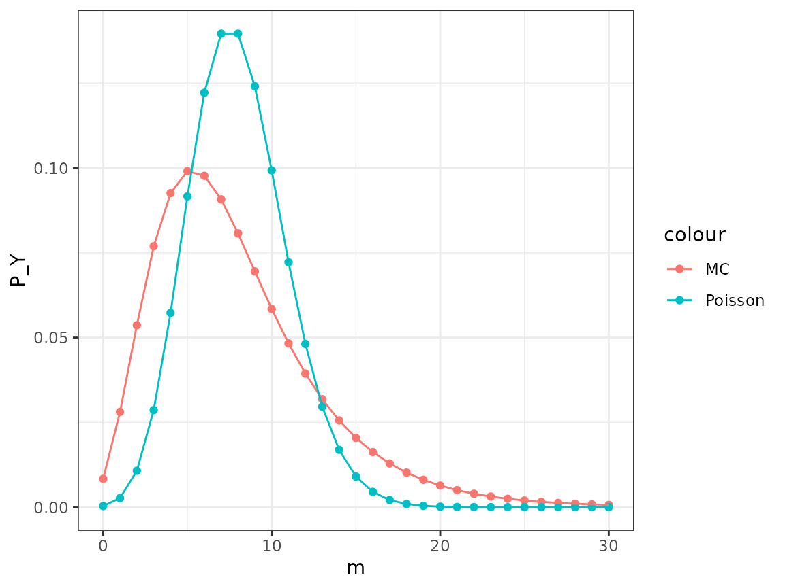

Tutorial 03: Monte Carlo integration (solutions)
Finn Lindgren
Source:vignettes/Tutorial03Solutions.Rmd
Tutorial03Solutions.RmdIntroduction
- In this lab session you will explore Monte Carlo integration and importance sampling.
- Open your github repository clone project from Lab 2 (either on https://rstudio.cloud or on your own
computer and upgrade the
StatCompLabpackage (see the https://finnlindgren.github.io/StatCompLab/ for more details) - Save your work for this lab in one or several new files in the project, and commit and push the changes to github (see Lab 2 for more information)
- In your code script, start with
library(StatCompLab)to get access to thearch_loglikefunction needed for one of the tasks.
Overdispersed Poisson distribution
We’ll use an overdispersed Poisson distribution as the first example. In an ordinary Poisson distribution \(Y\sim\mathsf{Poisson}(\lambda)\) with expectation \(\lambda\), the variance is also \(\lambda\). The coefficient of variation is defined as the ratio between the standard deviation and the expectation, which gives \(1/\sqrt{\lambda}\). In real applications, one often observes data where the coefficient of variation is larger than the Poisson model would give. One way of dealing with that is to add a latent random effect; a hidden layer of random values that “nudges” the expectation for each observation, which increases the observed coefficient of variation. The model can be written in two steps: \[ \begin{aligned} X & \sim \mathsf{Normal}(0,\sigma^2), \\ (Y|X=x) & \sim \mathsf{Poisson}[\exp(\mu + x)], \end{aligned} \] where the conditional expectation for \(Y\) given \(X=x\) and \(\mu\) is \(\lambda(\mu,x)=\exp(\mu+x)\), and \(\mu\) is a (fixed) parameter. The marginal expectation (but still conditionally on \(\mu\) and \(\sigma\)) can be obtained via the tower property (law of total expectation), \[ \begin{aligned} \mathsf{E}(Y|\mu,\sigma) &= \mathsf{E}[\mathsf{E}(Y|X)] = \mathsf{E}[\lambda(\mu,X)] = \mathsf{E}[\exp(\mu+X)] = \exp(\mu + \sigma^2/2) \end{aligned} \] where the last step comes from the expectation of a log-Normal distribution. For multiple observations, we can write the model as \[ \begin{aligned} x_i & \sim \mathsf{Normal}(0,\sigma^2), \text{ independent for each $i=1,\dots,n$,}\\ (y_i|x_i) & \sim \mathsf{Poisson}[\exp(\mu + x_i)], \text{ conditionally independent for each $i=1,\dots,n$}. \end{aligned} \]
Consider the following simulation code:
What is the expectation of \(Y\)?
- Theory exercise: Using the tower property (law of total variance), theoretically derive an expression for \(\mathsf{Var}(Y)\). You can get the needed log-Normal variance expression from https://en.wikipedia.org/wiki/Log-normal_distribution
Solution:
\[ \begin{aligned} \mathsf{Var}(Y|\mu,\sigma) &= \mathsf{E}[\mathsf{Var}(Y|X)] + \mathsf{Var}[\mathsf{E}(Y|X)] \\&= \mathsf{E}[\lambda(\mu,X)] + \mathsf{Var}[\lambda(\mu,X)] \\&= \mathsf{E}[\exp(\mu+X)] +\mathsf{Var}[\exp(\mu+X)] \\&= \exp(\mu + \sigma^2/2) + (\exp(\sigma^2)-1) \exp(2\mu + \sigma^2) \\&= \exp(\mu + \sigma^2/2) \left[ 1 + (\exp(\sigma^2)-1) \exp(\mu + \sigma^2/2) \right] \end{aligned} \] Since the second factor is always \(\geq 1\), this shows that the variance is never smaller than the expectation.
- Monte Carlo integration: Use Monte Carlo integration to approximate the probability mass function \[ \begin{aligned} p_Y(m|\mu,\sigma)=\mathsf{P}(Y=m|\mu,\sigma) &= \int_{-\infty}^\infty \mathsf{P}(Y=m|\mu,\sigma,X=x) p_X(x|\sigma) \,\mathrm{d}x \end{aligned} \] for \(m=0,1,2,3,\dots,15\), with \(\mu=\log(2)-1/2\) and \(\sigma=1\). Check with the formulas above what the resulting theoretical expectation is for \(Y\) for this parameter combination.
For this to be efficient, you should vectorise the calculations by evaluating the conditional probability function for \(Y\) over all the \(m\) values at once, for each simulated value \(x^{[k]}\sim\mathsf{Normal}(0,\sigma^2)\) value, for \(k=1,2,\dots,K\). Use \(K=10000\) samples.
Plot the resulting probability mass function \(p_Y(m|\mu,\sigma)\) together with the ordinary Poisson probability mass function with the same expectation value, \(\lambda = 2\). (Use the theory above to convince yourself that these two models for \(Y\) have the same expectation.)
Solution:
# Vectorised over m
mu <- log(2) - 1/2
K <- 10000
m <- 0:15
P_Y <- numeric(length(m))
for (loop in seq_len(K)) {
x <- rnorm(1, sd = 1)
P_Y <- P_Y + dpois(m, lambda = exp(mu + x))
}
P_Y <- P_Y / K
# Plot the results
suppressPackageStartupMessages(library(ggplot2))
ggplot(data.frame(m = m,
P_Y = P_Y,
P_Poisson = dpois(m, lambda = 2))) +
geom_point(aes(m, P_Y, col = "MC")) +
geom_point(aes(m, P_Poisson, col = "Poisson")) +
geom_line(aes(m, P_Y, col = "MC")) +
geom_line(aes(m, P_Poisson, col = "Poisson"))In the plot, the overdispersed Poisson probability function (that we just computed) is compared with the plain Poisson probability function for the same expectation value. Lines between values are included for clarity. Note: In this case, the second approach is faster, but in other situations the first approach is required, since it doesn’t require storing all the random numbers at the same time, thus allowing for a much larger \(K=n_{\text{mc}}\) value to be used.
-
Reusable function: Generalise the code to a
function
doverpois(for “d”ensity for over-dispersed Poisson) that takesm,mu,sigma, andKas input and returns adata.framesuitable for use withggplot.
Solution:
doverpois <- function(m, mu, sigma, K) {
P_Y <- numeric(length(m))
for (loop in seq_len(K)) {
x <- rnorm(1, sd = sigma)
P_Y <- P_Y + dpois(m, lambda = exp(mu + x))
}
P_Y <- P_Y / K
data.frame(m = m,
P_Y = P_Y,
P_Poisson = dpois(m, lambda = exp(mu + sigma^2/2)))
}Use the function to plot results for \(\mu=\log(8)-1/8\), \(\sigma = 1/2\), with \(m=0,1,\dots,30\) by adding P_Y
and P_Poisson geoms to
Solution:
suppressPackageStartupMessages(library(ggplot2))
ggplot(doverpois(m = 0:30, mu = log(8)-0.125, sigma = 0.5, K = 10000)) +
geom_point(aes(m, P_Y, col = "MC")) +
geom_point(aes(m, P_Poisson, col = "Poisson")) +
geom_line(aes(m, P_Y, col = "MC")) +
geom_line(aes(m, P_Poisson, col = "Poisson"))
Archaeology in the Baltic sea

The Waldemar cross, source: Wikipedia
``Anno Domini MCCCLXI feria III post Jacobi ante portas Visby in manibus Danorum ceciderunt Gutenses, hic sepulti, orate pro eis!’’English translation:
``In the year of our Lord 1361, on the third day after St. Jacob, the Goth fell outside the gates of Visby at the hands of the Danish. They are buried here. Pray for them!’’
Strategically located in the middle of the Baltic sea, the island of Gotland had shifting periods of being partly self-governed, and in partial control by the Hanseatic trading alliance, Sweden, Denmark, and the Denmark-Norway-Sweden union, until settling as part of Sweden in 1645. Gotland has an abundance of archaeological treasures, with coins dating back to Viking era trade routes via Russia to the Arab Caliphates. and captured the rich Hanseatic town of Visby.
In 1361 the Danish king Valdemar Atterdag conquered Gotland. The conquest was followed by a plunder of Visby. Most of the defenders (primarily local farmers that could not take shelter inside the city walls) were killed in the attack and are buried in a field, Korsbetningen (Literal translation: the grazing field that is marked by a cross, as shown in the picture), outside of the walls of Visby.
In the 1920s the gravesite was subject to several archaeological excavations. A total of \(493\) femurs (thigh bones) (\(256\) left, and \(237\) right) were found. We want to figure out how many persons were likely buried at the gravesite. It must reasonably have been at least \(256\), but how many more?
Statistical model
To build a simple model for this problem, we assume that the number of left (\(y_1=256\)) and right (\(y_2=237\)) femurs are two independent observations from a \(\mathsf{Bin}(N,\phi)\) distribution. Here \(N\) is the total number of people buried and \(\phi\) is the probability of finding a femur, left or right, and both \(N\) and \(\phi\) are unknown parameters.
The probability function for a single observation \(y\sim\mathsf{Bin}(N,\phi)\) is \[\begin{align*}
p(y|N,\phi) &= {N \choose y} \phi^y (1-\phi)^{N-y} .
\end{align*}\] The function arch_loglike() in the
StatCompLab package evaluates the combined log-likelihood
\(\log[p(\boldsymbol{y}|N,\phi)]\) for
a collection \(\boldsymbol{y}\) of
\(y\)-observations. If a
data.frame with columns N and phi
is provided, the log-likelihood for each row-pair \((N,\phi)\) is returned.
The combined \(l(y_1,y_2|N,\theta)=\log p(y_1,y_2|N,\phi)\) for the data set \(\{y_1,y_2\}\) is then given by \[ \begin{aligned} l(y_1,y_2|N,\theta) &= -\log\Gamma(y_1+1) - \log\Gamma(y_2+1) \\&\phantom{=~} - \log\Gamma(N-y_1+1) - \log\Gamma(N-y_2+1) + 2\log\Gamma(N+1) \\&\phantom{=~} + (y_1+y_2) \log(\phi) + (2 N - y_1 - y_2)\log(1-\phi) \end{aligned} \]
The task is to use Monte Carlo integration to estimate the posterior expectations of \(N\) and \(\phi\), when the prior distributions are \(N\sim\mathsf{Geom}(\xi)\), \(0<\xi<1\), and \(\phi\sim\mathsf{Beta}(a, b)\), \(a,b>0\).
The mathematical definitions are: Let \(N\) have a \(\mathsf{Geom}(\xi)\), \(\xi>0\), prior distribution, and let
\(\phi\) have a \(\mathsf{Beta}(a,b)\), \(a,b>0\), prior distribution: \[
\begin{aligned}
p_N(n) = \mathsf{P}(N=n) &= \xi\,(1-\xi)^n,\quad n=0,1,2,3,\dots, \\
p_\phi(\phi) &= \frac{\phi^{a-1}(1-\phi)^{b-1}}{B(a,b)}, \quad
\phi\in[0,1] .
\end{aligned}
\] and the probability mass function \(p_N(n)\) can be evaluated with
dgeom() in R, and the density \(p_\phi(\phi)\) can be evaluated with
dbeta.
Bayesian estimation
Before the excavation took place, the archaeologist believed that around \(1000\) individuals were buried, and that they would find around half on the femurs. To encode that belief in the Bayesian analysis, set \(\xi=1/(1+1000)\), which corresponds to an expected total count of \(1000\), and \(a=b=2\), which makes \(\phi\) more likely to be close to \(1/2\) than to \(0\) or \(1\).
The posterior density/probability function for \((N,\phi|\boldsymbol{y})\) is \[ \begin{aligned} p_{N,\phi|\boldsymbol{y}}(n,\phi|\boldsymbol{y}) &= \frac{p_{N,\phi,\boldsymbol{y}}(n,\phi,\boldsymbol{y})}{p_{\boldsymbol{y}}(\boldsymbol{y})} = \frac{p_N(n)p_\phi(\phi)p(\boldsymbol{y}|n,\phi)}{p_{\boldsymbol{y}}(\boldsymbol{y})} \end{aligned} \]
We can estimate \(p_{\boldsymbol{y}}(\boldsymbol{y})\) with Monte Carlo integration, the the same time as using importance sampling to estimate the posterior expectations. The theoretical expressions \[ \begin{aligned} p_{\boldsymbol{y}}(\boldsymbol{y}) &= \sum_{n=\max(y_1,y_2)}^\infty \int_0^1 p_{N,\phi,\boldsymbol{y}}(n,\phi,\boldsymbol{y}) \,\mathrm{d}\phi = \sum_{n=\max(y_1,y_2)}^\infty \int_0^1 p(\boldsymbol{y}|n,\phi) p_N(n) p_\phi(\phi) \,\mathrm{d}\phi\\ \mathsf{E}(N|\boldsymbol{y}) &= \sum_{n=\max(y_1,y_2)}^\infty \int_0^1 n\,p_{N,\phi|\boldsymbol{y}}(n,\phi) \,\mathrm{d}\phi = \sum_{n=\max(y_1,y_2)}^\infty \int_0^1 n\,\frac{p(\boldsymbol{y}|n,\phi)}{p_{\boldsymbol{y}}(\boldsymbol{y})} p_N(n) p_\phi(\phi) \,\mathrm{d}\phi\\ \mathsf{E}(\phi|\boldsymbol{y}) &= \sum_{n=\max(y_1,y_2)}^\infty \int_0^1 \phi\,p_{N,\phi|\boldsymbol{y}}(n,\phi) \,\mathrm{d}\phi = \sum_{n=\max(y_1,y_2)}^\infty \int_0^1 \phi\,\frac{p(\boldsymbol{y}|n,\phi)}{p_{\boldsymbol{y}}(\boldsymbol{y})} p_N(n) p_\phi(\phi) \,\mathrm{d}\phi \end{aligned} \]
Monte Carlo integration
What might a good choice of sampling distribution be? In this first
approach to the problem, let’s use the prior distributions as sampling
distributions for the Monte Carlo integration. This means that we need
to sample \(n^{[k]}\sim\mathsf{Geom}(\xi)\) and \(\phi^{[k]}\sim\mathsf{Beta}(a,b)\), and
compute Monte Carlo estimates \[
\begin{aligned}
\widehat{p}_{\boldsymbol{y}}(\boldsymbol{y}) &=
\frac{1}{K}
\sum_{k=1}^K p(\boldsymbol{y}|n^{[k]},\phi^{[k]})\\
\widehat{\mathsf{E}}(N|\boldsymbol{y}) &=
\frac{1}{K \widehat{p}_{\boldsymbol{y}}(\boldsymbol{y})}
\sum_{k=1}^K n^{[k]} p(\boldsymbol{y}|n^{[k]},\phi^{[k]})\\
\widehat{\mathsf{E}}(\phi|\boldsymbol{y}) &=
\frac{1}{K \widehat{p}_{\boldsymbol{y}}(\boldsymbol{y})}
\sum_{k=1}^K \phi^{[k]} p(\boldsymbol{y}|n^{[k]},\phi^{[k]})\\
\end{aligned}
\] Write a function estimate that takes inputs
y, xi, a, b, and
K and implements the above Monte Carlo integration
method.
Test the function by running
estimate(y=c(237,256), xi=1/1001, a=0.5, b=0.5, K=10000)
Solution:
estimate <- function(y, xi, a, b, K) {
samples <- data.frame(
N = rgeom(K, prob = xi),
phi = rbeta(K, shape1 = a, shape2 = b)
)
loglike <- arch_loglike(param = samples, y = y)
p_y <- mean(exp(loglike))
c(p_y = p_y,
E_N = mean(samples$N * exp(loglike) / p_y),
E_phi = mean(samples$phi * exp(loglike) / p_y))
}
estimate(y = c(237, 256), xi = 1/1001, a = 0.5, b = 0.5, K = 10000)## p_y E_N E_phi
## 6.360064e-06 9.884083e+02 3.694532e-01Note: as shown in lecture 3, the conditional posterior distribution for \(\phi\) for fixed \(N=n\) is \((\phi|n,\boldsymbol{y})\sim \mathsf{Beta}(a+y_1+y_2,b+2n-y_1-y_2)\). This can be used to construct a potentially more efficient method, where each \(\phi^{[k]}\) is sampled conditionally on \(n^{[k]}\), and the integration importance weights adjusted appropriately.